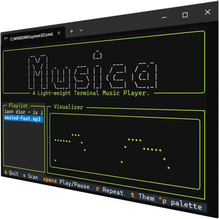

Re-discover your music.
A high-performance, lightweight terminal music player built for hackers, developers, and audiophiles who live in the shell.

Engineered for efficiency.
Blazing fast
Consumes less than 35MB of RAM. Perfect for gamers, developers, and AI researchers running memory-heavy tasks.
Format support
Universal track scanning for MP3, WAV, FLAC, OGG, M4A, and MPEG. Organizes your library in seconds.
Real-time visualizer
A beautiful wave visualizer that reacts to your music. Toggle it live for absolute zero-CPU mode.
Why Terminal Music?
Most modern players consume hundreds of megabytes just to sit in the background. Musica is built for those who need every ounce of performance for their work, without sacrificing their soundtrack.
Zero Jitter
Perfect for gamers and VR users who need every CPU cycle for frame-timing.
Low Context-Switch
Control your music without leaving your coding environment or terminal session.
System Respectful
Stays under 35MB RAM, even with libraries containing thousands of tracks.
Not just a command. An app.
# Launching Musica...
Initializing TUI engine...
Loading playlist...
No complicated commands to memorize. Just launch and use your keyboard to navigate your library with the speed of a terminal and the ease of a GUI.
Get started in seconds.
# Clone the repository or download ZIP from GitHub
$ git clone https://github.com/GoldenFish23/Musica-TUI.git
# (Optional) Extract the ZIP to your local directory
# For Windows Users
$ install.bat
$ run.bat
# For Cross-platform
$ python build/installer.py
$ python build/musica.py